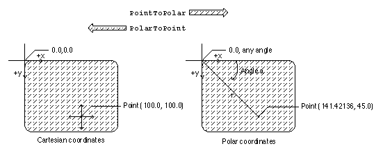

Legacy Document
Important: The information in this document is obsolete and should not be used for new development.
Important: The information in this document is obsolete and should not be used for new development.


Converting Between Cartesian and Polar Coordinates
You can use QuickDraw GX functions to convert between Cartesian and polar coordinates. ThePolarToPointfunction converts a point in polar coordinates to Cartesian coordinates, (r, a) to (x, y). ThePointToPolarfunction converts a point in Cartesian coordinates to polar coordinates, (x, y) to (r, a). ThegxPolarpoint (r, a) corresponds to thegxPointpoint (r cos(a), r sin(a)). Since r2 = x2 + y2 and tan(a) = y / x, thegxPointstructure (100, 100) corresponds to thegxPolarstructure (141.42136, 45). Figure 8-19 shows the Cartesian coordinate of point (100, 100) and the polar coordinate of identical point (141.42136, 45).Figure 8-19 Converting between Cartesian and polar coordinates

The Cartesian and polar coordinate systems are described in the section "Cartesian and Polar Coordinate Conversion" beginning on page 8-10. The
PolarToPointfunction is described on page 8-56. ThePointToPolarfunction is described on page 8-57.